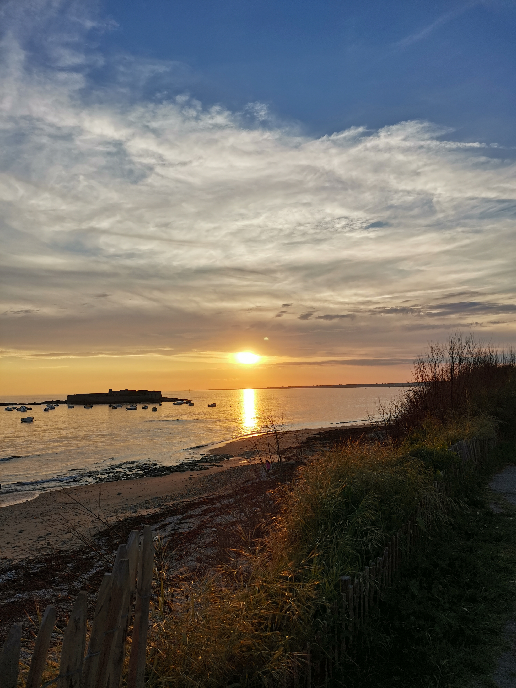
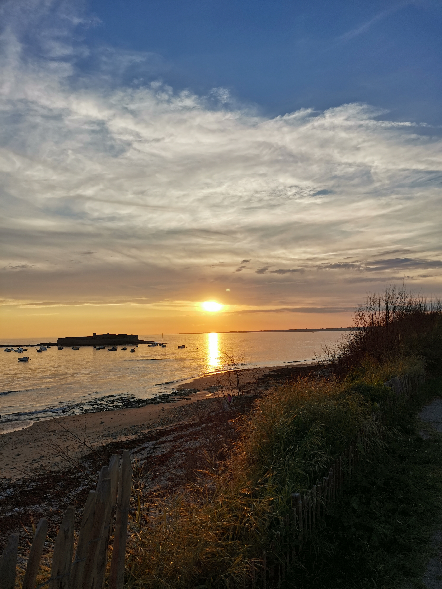

Le Vélo
Pratique en autodidacte du vélo depuis 2020, ce sport m'a permis de me surpasser en essayant chaque fois de battre les précédents records de distance.
Pratique en autodidacte du vélo depuis 2020, ce sport m'a permis de me surpasser en essayant chaque fois de battre les précédents records de distance.
La photographie est un moyen de m'exprimer, d'immortaliser des moments forts ou des lieux uniques. Vous pouvez voir différentes photos dans différents lieux commes des balades, des lieux chargés d'hitoires ou des lieux naturels.


 



Je suis tombé dedans depuis l'âge de mes 10 ans. C'est un jeu rempli de stratégie où chaque pièce déplacée peut nous faire gagner ou au contraire perdre la partie.
Je compare souvent ce jeu au domaine de la cybersécurité car chaque faille dans le placement des pions doit être corrigée avant que l'adversaire puisse y rentrer.